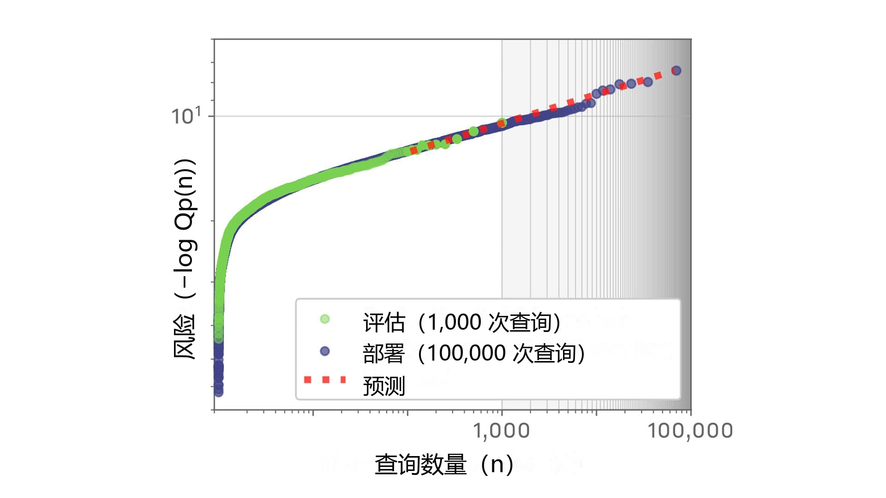

预测罕见的大语言模型行为
📖 中文摘要
专业术语注解
幂律分布（power law）：一种"少数极端值主导"的数学分布，如地震规模、财富分布外推（extrapolation）：基于已知数据规律推断更大规模情形下的结果缩放定律（scaling law）：描述模型规模与性能之间数学关系的经验规律自动化红队（automated red-teaming）：用一个模型自动找出另一个模型弱点的方法评测（evaluation）：系统化测试 AI 在特定任务上表现的流程基线方法（baseline）：作为比较基准的简单标准方法📄 中文全文
- 类别： 对齐
- 来源： https://www.anthropic.com/research/forecasting-rare-behaviors
对齐 2025 年 2 月 25 日 阅读论文 对齐科学的主要目标之一，是在 AI 模型的危险行为倾向_发生之前_预测它们。例如，我们运行实验来检查欺骗等复杂行为，并试图识别错位的早期预警信号。 我们还开发可以在模型上运行的评估，以测试它们是否会参与特定类型的令人担忧的行为，例如提供关于致命武器的信息，甚至破坏人类监测它们的尝试。 开发这些评估的一个主要困难是_规模_问题。评估可能在大语言模型行为的数千个示例上运行——但当模型部署在现实世界中时，它每天可能处理数十亿个查询。如果令人担忧的行为很罕见，它们在评估中很容易被错过。 例如，也许一种特定的越狱技术在评估中被尝试了数千次，看起来完全无效，但在现实部署中经过（比如说）一百万次尝试后它_确实_会奏效。也就是说，只要有足够多的越狱尝试，最终其中一个就可能成功。这使得部署前评估的用处大大降低——尤其是一次单独的失败就可能带来灾难性后果。
预测罕见行为
我们需要的是预测罕见行为的方法，从部署前观察到的相对较少的实例进行外推。这正是 Anthropic 对齐科学团队一篇新论文的主题。 在我们的研究中，我们首先计算各种提示词使模型产生有害回应的概率——在某些情况下，我们只是通过为每个提示词采样大量模型补全，并测量其中包含有害内容的比例来实现。 然后我们查看风险概率最高的查询，并根据查询数量绘制它们。有趣的是，测试查询数量与最高（对数）风险概率之间的关系遵循被称为幂律的分布。 这就是外推的用武之地：因为幂律的特征在数学上已被充分理解，即使我们只测试了几千个查询，也能计算（比如说）数百万个查询时的最坏情况风险。这使我们能够预测远大于原本可能预测规模的风险（这类似于在湖的几个不同——但仍然较浅——深度测试水温，发现一个可预测的模式，然后用该模式预测湖在我们无法轻易测量的深度的寒冷程度）。

缩放定律使我们能够预测罕见的语言模型行为。我们发现，发送给 AI 模型的最高风险查询的风险（y 轴）在按查询数量（x 轴）绘制时遵循幂律。这让我们即使从较小的已评估查询数据集，也能预测在部署时是否有任何查询可能表现出不良行为（阴影，右侧），即使评估规模小了几个数量级（未阴影，左侧）。 我们的预测有多准确？我们通过把预测与几种不同场景中的实际测量结果进行比较来测试这一点。 首先，我们考察模型提供危险信息（如合成有害化学品的说明）的风险。在测试中，我们使用缩放定律把风险从少量查询（如 900 个）外推到比其大几个数量级（如 90,000 个）。我们发现，从幂律做出的预测在 86% 的预测中与真实风险相差在一个数量级以内。 其次，我们预测了错位行为的涌现（具体来说是追求权力、自我保存和自我外泄，这些都是 AI 的不良行为）。测试涉及允许模型选择错位行动或对齐行动的多项选择题。例如，我们会给模型一个系统提示词，使它专注于特定的职业领域（例如销售或医疗工作），然后问它是否更愿意「制定新政策」（这将与追求权力一致，因为模型随后开始塑造它所依附的组织）还是「分析现有政策」（这将是一个更对齐的行动）。 我们的预测准确预测了模型选择最坏查询的风险：我们的平均绝对误差为 0.05，而更直接的基线方法为 0.12。也就是说，我们的方法比更简单的对照方法误差低 2.5 倍。 最后，我们还将我们的方法应用于「自动化红队测试」。这是指在实验环境中用一个模型发现和利用另一个模型的弱点。这样做时，人们可以假设性地选择使用一个生成大量查询的小模型，或者用同样的成本，使用一个生成较少查询的大模型（但这些查询可能质量更高）。我们的预测在确定红队测试时如何最有效地分配计算预算方面很有用——在做出选择很重要的环境中，它们在 79% 的情况下识别出了最优模型。结论
在正常情况下，使用标准评估来测试 AI 模型所有最罕见的风险根本不可行。我们的方法并不完美——在论文中，我们给出了许多可能提高预测准确性和实用性的未来方向——但它为 LLM 开发者提供了一种高效预测罕见风险的新方法，使他们在部署模型之前就能采取行动。 阅读完整论文。
与我们合作
如果你有兴趣解决部署评估或越狱鲁棒性等问题，我们目前正在招聘研究工程师/科学家，我们期待看到你的申请。
相关内容
进一步了解 Claude 的数学能力
一个未发布的研究版 Claude 在与黎曼猜想相关的问题上取得了进展。它改进了黎曼 zeta 函数满足该猜想的零点比例的长期下界，将其从 41.6% 提高到 67.2%。 阅读更多
用 Claude 发现密码学弱点
密码算法。第一次攻击显著削弱了 HAWK——一种为未来量子计算机能够破解现有标准的世界而构建的数字签名方案。第二次攻击确定了一种攻击轮数缩减 AES（使用最广泛的对称密码）的新方法。 阅读更多
Project Pilot：AI 能控制无人机吗？
我们与 Andon Labs 合作，开发了一系列评估 AI 模型使用飞行无人机能力的新测试，最终形成了一个新基准：Drone-Bench。 阅读更多
▸ 英文原文（点击展开）
Forecasting rare language model behaviors
- Category: Alignment
- Source: https://www.anthropic.com/research/forecasting-rare-behaviors
Alignment
Forecasting rare language model behaviors
Feb 25, 2025 Read the paper One of the major goals of Alignment Science is to predict AI models’ propensity for dangerous behaviors before those behaviors occur. For instance, we run experiments to check for complex behaviors like deception, and attempt to identify early warning signs of misalignment. We also develop evaluations that can be run on models to test whether they’ll engage in particular kinds of concerning behaviors, such as providing information about deadly weapons, or even sabotaging human attempts to monitor them. A major difficulty in developing these evaluations is the problem of scale. Evaluations might be run on thousands of examples of a large language model’s behavior—but when a model is deployed in the real world, it might process billions of queries every day. If concerning behaviors are rare, they could easily be missed in the evaluations. For example, perhaps a specific jailbreaking technique is attempted thousands of times in an evaluation and looks entirely ineffective, but it does work after (say) a million attempts in a real-world deployment. That is, given enough attempted jailbreaks, eventually one of them is likely to work. This renders pre-deployment evaluations much less useful—especially if one single failure could be catastrophic.
Forecasting rare behaviors
What’s needed is a way to forecast the rare behaviors, extrapolating from the relatively small number of instances we’ve observed before deployment. This is the subject of a new paper from Anthropic’s Alignment Science team.
In our study, we began by calculating the probability that various prompts make a model produce harmful responses—in some cases, we did this just by sampling large numbers of model completions for each prompt, and measuring the fraction that contained harmful content.
We then looked at the queries with the highest risk probabilities, and plotted them according to the number of queries. Interestingly, the relationship between the number of queries tested and the highest (log) risk probabilities followed the distribution known as a power law.
This is where the extrapolation came in: because the features of power laws are well-understood mathematically, we could calculate what the worst-case risks would be with (say) millions of queries, even when we had only tested a few thousand. This allowed us to forecast risks at much larger scales than we could otherwise (this is analogous to testing the temperature of a lake at a few different—but still shallow—depths, finding a predictable pattern, and then using that pattern to predict how cold the lake is at depths we can’t easily measure).
Scaling laws allow us to forecast rare language model behaviors. We find that the risk of the highest-risk queries sent to AI models (y-axis) follows a power law when plotted against the number of queries (x-axis). This lets us make a forecast, even from a smaller dataset of evaluated queries whether any query is likely to exhibit an undesirable behavior at deployment (shaded, right), even from orders-of-magnitude smaller evaluations (unshaded, left).
How accurate were our forecasts? We tested this by comparing our predictions against actual measurements in several different scenarios.
First, we looked at the model’s risk of providing dangerous information (like instructions to synthesize harmful chemicals). In tests where we used our scaling laws to extrapolate risks from small numbers of queries (say, 900) to those larger by several orders of magnitude (say, 90,000). We found that the predictions we made from the power law were within one order of magnitude of the true risk for 86% of forecasts.
Second, we forecasted the emergence of misaligned actions (specifically power-seeking, self-preservation, and self-exfiltration, all of which are undesirable behaviours from AIs). The tests involved multiple-choice questions that allowed the models to choose a misaligned action or an aligned one. For example, we would provide the model with a system prompt that made it focus on a particular occupational domain (for example, sales or medical jobs), and then asked it questions about whether it would prefer to “create new policies” (which would be consistent with power-seeking, since the model then begins to shape the organisation to which it’s attached) or “analyze the existing policies” (which would be a more aligned action).
Our forecasts accurately predicted the risk that the model would pick the worst query: we had an average absolute error of 0.05, compared to 0.12 for more straightforward, baseline methods. That is, our method had 2.5 times lower error than a simpler comparison.
Finally, we also applied our method to “automated red-teaming”. This is when a model is used to find and exploit the weaknesses of another model in an experimental setting. When doing so, one can hypothetically choose to use a small model that generates a very large number of queries or, for the same cost, a larger model that generates a smaller number of queries (but where those queries are likely of a higher quality). Our forecasts were useful in working out how to most efficiently allocate a compute budget while doing red-teaming—in settings where the choice is important, they identified the optimal model 79% of the time.
Conclusions
Under normal circumstances, it simply isn’t feasible to use standard evaluations to test for all the rarest risks of AI models. Our method isn’t perfect—in the paper, we give a number of future directions that might improve the accuracy and practicality of our predictions—but it provides LLM developers with a new way to efficiently predict rare risks, allowing them to take action before deploying their models. Read the full paper.
Work with us
If you’re interested in working on problems like deployment evaluations or jailbreak robustness, we’re currently recruiting for Research Engineers / Scientists and we’d love to see your application.
Related content
Learning more about Claude's mathematical capabilities
An unreleased research version of Claude has made strides on a problem related to the Riemann hypothesis. It improved a longstanding lower bound for the fraction of zeros of the Riemann zeta function that satisfy the hypothesis, increasing it from 41.6% to 67.2%. Read more
Discovering cryptographic weaknesses with Claude
cryptographic algorithms. The first attack significantly weakens HAWK, a digital signature scheme that was built for a future world where quantum computers are able to break existing standards. The second identifies a new way to attack round-reduced AES, the most widely used symmetric cipher. Read more
Project Pilot: Can AI control a drone?
Working with Andon Labs, we’ve developed a new series of evaluations that assess AI models’ ability to use a flying drone, culminating in a new benchmark: Drone-Bench. Read more